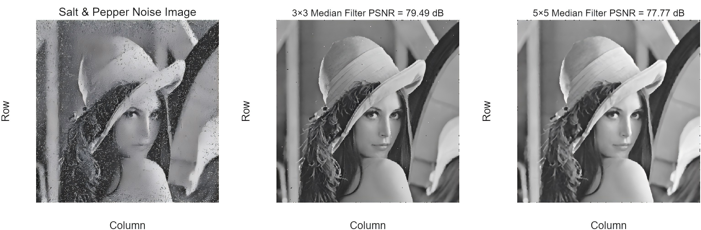

Cleaning and resizing images

- Pixel neighbourhoods and boundary handling
- Nearest-neighbour vs bilinear resampling
- Mean vs median filtering on Gaussian and salt-and-pepper noise
Finding: a 3×3 median filter (PSNR 79.49 dB) removed impulse noise while keeping more detail than 5×5 (77.77 dB).